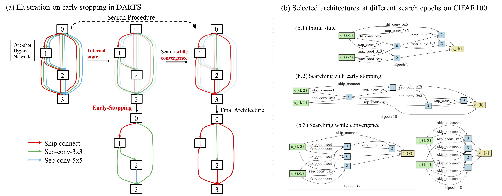

Published in arXiv:1909.06035, 2019
Recently, there has been a growing interest in automating the process of neural architecture design, and the Differentiable Architecture Search (DARTS) method makes the process available within a few GPU days. In particular, a hyper-network called one-shot model is introduced, over which the architecture can be searched continuously with gradient descent. However, the performance of DARTS is often observed to collapse when the number of search epochs becomes large. Meanwhile, lots of "skip-connects" are found in the selected architectures. In this paper, we claim that the cause of the collapse is that there exist cooperation and competition in the bi-level optimization in DARTS, where the architecture parameters and model weights are updated alternatively. Therefore, we propose a simple and effective algorithm, named "DARTS+", to avoid the collapse and improve the original DARTS, by "early stopping" the search procedure when meeting a certain criterion. We demonstrate that the proposed early stopping criterion is effective in avoiding the collapse issue. We also conduct experiments on benchmark datasets and show the effectiveness of our DARTS+ algorithm, where DARTS+ achieves 2.32% test error on CIFAR10, 14.87% on CIFAR100, and 23.7% on ImageNet. We further remark that the idea of "early stopping" is implicitly included in some existing DARTS variants by manually setting a small number of search epochs, while we give an explicit criterion for early stopping. 